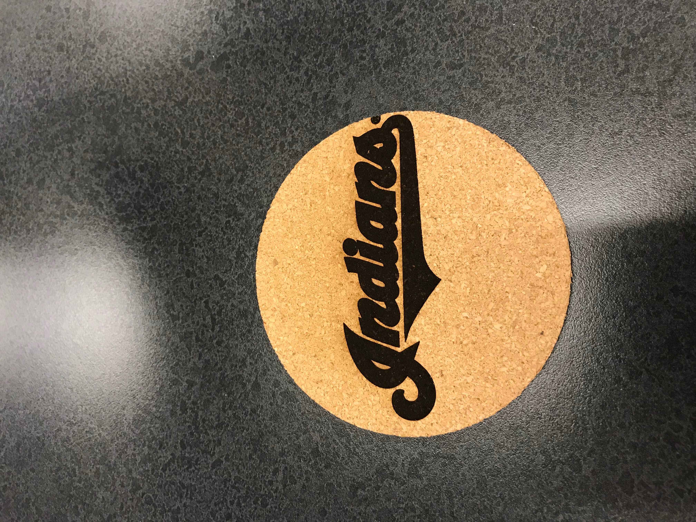
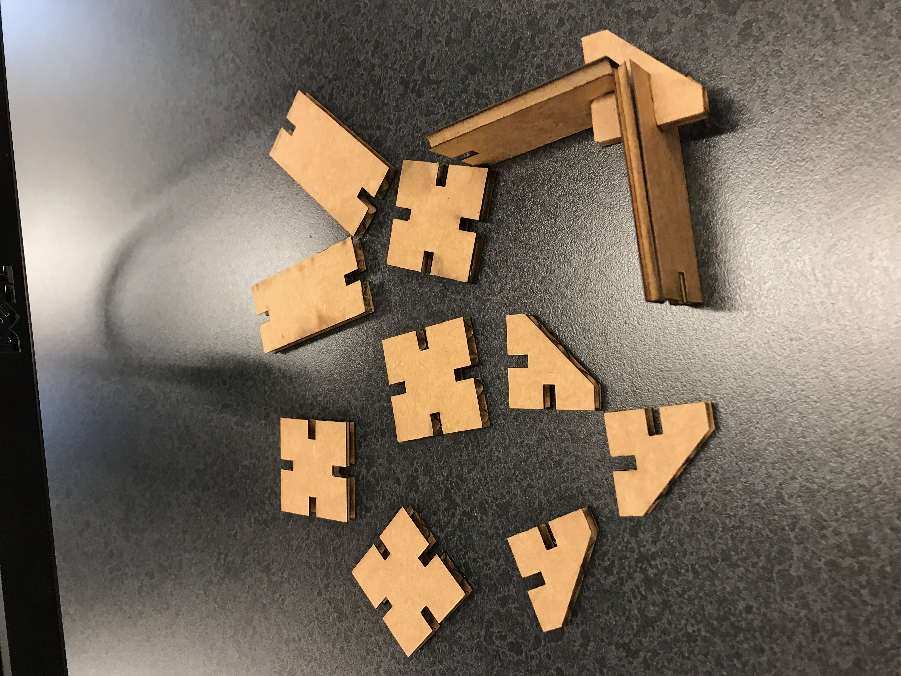

Alex Lammers | WRA Digital Fab 2018
February 1 - February 13
Rotation 4 | Laser Cutting, Engraving and Vinyl Cutting Assignment
The assignment for this rotation was to utilize the laser cutter to make four different things:
The first thing I did was make a cardboard box. The box was engraved with images of famous buildings on five faces, and my initials on one face.
I simply imported the images to Corel Draw, went to "Trace Bitmap", and then I selected "detailed logo" from the menu. I then copied those onto
a box designed on makercase.

Next, I used the same technique on Corel Draw to get a detailed logo of the Cleveland Indian's logo. I then laser engraved
That design on a cork coaster.

Then, I designed a press fit kit with square, triangular, and rectangular pieces using Corel Draw. I had to make sure that the slits
in the cardboard were 1/8 an inch to match the thickness of the cardboard. I also had to be sure to select "Hairline" in Corel Draw so that
the pieces would cut all the way out rather than just engraving.

Finally, I engraved a glass using the laser machine. This time, I chose the Cavs logo to engrave. I had to put in a special insert in the laser engraver
So that the glass would spin while it was engraving.

Back to index